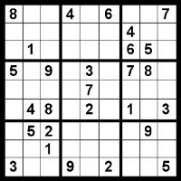

Sudoku

Sudoku is often used as a constraint programming example. Our example is a 4x4 Sudoku.
Transitions are unnessary for the Sudoku problem so we do not state a Start or End and
instead use Board as the object for Req Board to specify what symbols we know.
? is used for the symbols we do not know.
To make a constraint like "all different" we can use Req like below:
Req RowColBlock { v !v !v !v }
Req RowColBlock { !v v !v !v }
Req RowColBlock { !v !v v !v }
Req RowColBlock { !v !v !v v }
source | solution